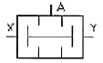

설비보전기능사 (2008-10-05 기출문제)
1과목: 기계보전 일반(대략구분)
1. 관로에서 유속의 흐름에 따라 관내 압력이 상승 또는 하강하는 현상은?
- 캐비테이션
- 수격작용
- 서징현상
- 크래킹
(정답률: 77%)

2. 인터널 기어 대신 이에 해당하는 고무 벨트로 만들어져 있는 벨트는?
- 가죽 벨트
- 천 벨트
- 고무 벨트
- 타이밍 벨트
(정답률: 72%)
3. 제동장치로 사용되는 것은?
- 클러치
- 완충기
- 커플링
- 브레이크
(정답률: 95%)
4. 기계제도에서 길이 방향으로 절단하면 오히려 이해하는데 지장을 초래하기 쉬운 기계요소들만 짝지어진 것은?
- 축, 후크, 림
- 리벳, 얇은 판, 형강
- 리브, 암, 기어 이
- 풀리, 체인, 벨트
(정답률: 85%)
5. 펌프를 운전할 때 주기적으로 양정, 토출량이 규칙적으로 변하는 현상은?
- 서징(Surging) 현상
- 공동(Cavitation) 현상
- 프레싱(Flashing) 현상
- 수격작용(Water Hammering) 현상
(정답률: 65%)
6. 스패너로 볼트 체결 시, 죔 토크를 구하는 식을 바르게 나타낸 것은?(단, 죔 토크는 T, 볼트 중심에서 손 중심까지의 거리는 L(cm), 당기는 힘은 F(kgf), 볼트 직경은 D(cm)라고 한다.)
- 죔 토크 T = L × F [kgf・cm]
- 죔 토크 T =
 × F [kgf・cm]
× F [kgf・cm] - 죔 토크 T = L × F ×
 [kgf・cm]
[kgf・cm] - 죔 토크 T = L ×
 [kgf・cm]
[kgf・cm]
(정답률: 75%)
7. 윤활부위에 흡입된 이물질을 무해한 형태로 바꾸든가, 배출하는 윤활유의 작용을 무엇이라고 하는가?
- 감마작용
- 냉각작용
- 밀봉작용
- 청정작용
(정답률: 87%)
8. 다음 중 순환 급유법이 아닌 것은?
- 유륜식 급유법
- 수 급유법
- 원심 급유법
- 비말 급유법
(정답률: 65%)
9. 분할핀의 호칭 방법에 해당되지 않는 것은?
- 규격번호
- 호칭지름 x 길이
- 재료
- 형식
(정답률: 69%)
10. 다음 중 체결용 기계요소가 아닌 것은?
- 볼트, 너트
- 핀
- 코터
- 체인
(정답률: 81%)
11. 일반 유도 전동기의 특징으로 틀린 것은?
- 구조가 간단하다.
- 품질, 성능이 안정되어 있다.
- 회전수 조절이 자유롭다.
- 전원회로 설치가 용이하다.
(정답률: 77%)
12. 윤활유의 점도에 해당하는 것으로 그리스의 굳은 정도를 나타내는 성질은?
- 중화가
- 황산회분
- 산화안정도
- 주도
(정답률: 89%)
13. 다음 중 평행축형 기어 감속기의 종류가 아닌 것은?
- 하이포이드기어 감속기
- 스퍼기어 감속기
- 헬리컬기어 감속기
- 더블 헬리컬기어 감속기
(정답률: 76%)
14. 다음 중 윤활유가 유동성을 잃기 직전의 온도를 무엇이라고 하는가?
- 유동점
- 점도
- 노점
- 인화점
(정답률: 80%)
15. 고온의 유체가 흐르는 관의 팽창 수축을 고려하여 축 방향으로 과도한 응력이 흐르지 않도록 한 관 이음 방법은?
- 용접이음
- 나사형이음
- 신축이음
- 플랜지이음
(정답률: 77%)
16. 수평도나 수직도 측정 및 수평이나 수직으로부터의 약간의 기울기를 측정하는 액체식 측정기는?
- 버니어 캘리퍼스
- 마이크로미터
- 다이얼 게이지
- 수준기
(정답률: 79%)
17. 다음과 같은 척도의 표시 중에서 배척에 해당하는 것은?
- 1 : 1
- 1 : 5
- 2 : 1
- 1 : √2
(정답률: 88%)
18. 밸브 중에서 AND 요소로 알려져 있으며, 두 개의 입력 신호가 다른 압력일 경우에 작은 압력 쪽의 공기가 출력되므로, 안전제어 및 검사기능 등에 사용되는 밸브는?
- 체크 밸브
- 셔틀 밸브
- 2압 밸브
- 감압 밸브
(정답률: 80%)
19. 축의 구부러짐을 현장에서 수리 할 수 있는 공구는?
- 기어풀러
- 짐크로
- 오스터
- 유압풀러
(정답률: 89%)
20. 유체의 흐름을 한 방향으로만 흐르게 하기 위한 밸브는?
- 스톱 밸브
- 체크 밸브
- 안전 밸브
- 격막 밸브
(정답률: 90%)
2과목: 설비관리(대략구분)
21. 다음 중 송풍기의 냉각 방법에 의한 분류가 아닌 것은?
- 공기 냉각형
- 재킷 냉각형
- 중간 냉각 다각형
- 편 흡입형
(정답률: 71%)
22. 투상도 중에서 물체의 가장 주된 면을 나타내는 투상도는?
- 평면도
- 정면도
- 우측면도
- 좌측면도
(정답률: 89%)
23. 금속이 가공에 의해 경도가 커지는 반면 연신율이 감소되는 성질을 무엇이라고 하는가?
- 인장강도(tensile strength)
- 강도(strength)
- 가공경화(work hardening)
- 취성(brittleness)
(정답률: 83%)
24. 압축기 밸브부품 중 밸브스프링 교환 시 잘못된 것은?
- 자유상태에서 높이가 규정치 이하로 되었을 때 교환한다.
- 손으로 간단히 수정하여 사용해서는 안 된다.
- 교환시간이 되면 기준치 내에서도 교환한다.
- 교환시간이 되어도 탄성마모가 없으면 교환하지 않는다.
(정답률: 88%)
25. 설비 보전 효과를 기술한 것으로 틀린 것은?
- 설비 고장으로 인한 정지 손실이 감소한다.
- 제작 불량이 적어진다.
- 예비 설비의 필요성이 증가된다.
- 제조 원가가 절감된다.
(정답률: 68%)
26. 설비표준은 사용하기 쉽도록 실무적인 방법으로 표현하는 것이 좋다. 표준에 대한 표현형식의 분류로 틀린 것은?
- 조문형식
- 매뉴얼방식
- 요인분석방식
- 도표형식
(정답률: 59%)
27. 설비를 목적별로 분류한 것 중 틀린 것은?
- 생산설비 – 기계, 운반장치, 전기장치, 배관
- 유틸리티설비 – 증기발생장치, 발전설비, 수처리설비
- 연구개발설비 – 기초 연구설비, 응용 연구설비, 공업화 연구설비
- 관리설비 – 항만설비, 도로, 저장설비
(정답률: 78%)
28. 전 보전요원이 한 사람의 보전 책임자 아래 조직되어 지휘, 감독을 받고 배치 상으로 집중되어 있는 설비보전 조직은?
- 지역보전
- 부문보전
- 절충보전
- 집중보전
(정답률: 83%)
29. 설비의 물리적 성질과 메커니즘(mechanism)을 이해하여 만성화된 설비나 시스템의 불합리 현상을 원리 및 원칙에 따라 해석하여 현상을 밝혀내는 기법은?
- PM분석
- FMEA
- FTA
- QM분석
(정답률: 84%)
30. 듀폰방식의 보전 효과 측정요소 중 생산성의 요소는 무엇인가?
- 노동효율
- 계획달성률
- 설비 투자에 대한 보전비의 비율
- 월당 총 공수에 대한 예방 보전 비율
(정답률: 57%)
3과목: 공유압 일반(대략구분)
31. 계속적 또는 반복적으로 사용되며, 고액의 자본을 투입한 유형 고정 자산의 총칭을 무엇이라고 하는가?
- 기구
- 범용 공작기계
- 설비
- 컴퓨터 제어기계
(정답률: 85%)
32. TPM은 여러 가지 측면에서 전통적인 관리시스템과 차이점이 많다. TPM을 설명한 내용 중 틀린 것은?
- 사전활동 중심
- 로스(LOSS) 측정
- OUTPUT 지향
- 불량발생원 제거
(정답률: 75%)
33. 치공구의 정의를 올바르게 설명한 것은?
- 지그와 고정구(jig&fixture), 금형, 절삭공구, 검사공구 등 각종 공구를 통칭하는 용어이다.
- 현장 작업자가 작업 관리에 사용하는 것으로 사용이 간편하고 직관적으로 이용하는데 사용하는 공구이다.
- 장치공업이나 제작공업에 있어서 제어기를 이용하여 종합적으로 파악하고 관리하는데 사용하는 계측기이다.
- 정밀도가 극도로 높고 취급에 상당한 지식이나 기량을 필요로 하는 공구이다.
(정답률: 77%)
34. 부하가 많을 경우에 각 부하전력의 산술합계를 최대부하로 나눈 것은?
- 부하율
- 부등율
- 평균부하율
- 설비 이용율
(정답률: 50%)
35. 품질 확보를 위해서 품질보전 전개 순서가 있다. 추진 순서가 올바른 것은?
- 현상분석 → 목표설정 → 요인해석 → 표준화 → 개선 및 실시
- 목표설정 → 현상분석 → 요인해석 → 표준화 → 개선 및 실시
- 목표설정 → 현상분석 → 요인해석 → 개선 및 실시 → 표준화
- 현상분석 → 목표설정 → 요인해석 → 개선 및 실시 → 표준화
(정답률: 66%)
36. 설비 종합효율을 구하는 요소가 아닌 것은?
- 설비 이용률
- 시간 가동률
- 성능 가동률
- 양품률
(정답률: 67%)
37. 다음 중 계측관리에 있어서 계측기의 선정시 유의사항에 해당하는 것은?
- 작업용, 관리용, 시험 연구용 등 계측목적에 적합한 것을 선정한다.
- 계측방법을 선정하고 계측기의 취급, 조작 등을 표준화한다.
- 계측기의 원리, 구조 및 성능에 적합한 방법을 선택한다.
- 주체작업과 관련이 적당하여야 한다.
(정답률: 50%)
38. 보전작업관리에 있어서 PER/CPM 기법 도입에 특징이 아닌 것은?
- 필요한 정도에 따라 얼마든지 프로젝트를 세분하여 표시할 수 있다.
- 장래예측이 불가능하며, 후진적 관리 방식이다.
- 시공일을 앞당겨야 할 경우 공기단축을 위한 지침을 세울 수 있게 한다.
- 대체공법을 신속하게 평가할 수 있게 한다.
(정답률: 74%)
39. 공장설비의 분류방법에 관한 내용에서 각종 기호법에 대한 설명 중 틀린 것은?
- 순번식 기호법 – 종류, 형태, 크기 등에 상관없이 배치순, 구입순으로 기호를 표기하는 것이다.
- 세구분식 기호법 – 연속 범위 중에서 일정 범위의 숫자를 하나의 종류에 해당시킨다.
- 기억식 기호법 – 뜻이 있는 기호법의 대표적인 것으로서 기억이 편리하도록 항목의 첫 글자 등의 문자를 기호로 한다.
- 십진분류 기호법 – 도형을 사용하여 알기 쉽도록 배치하는 방법이다.
(정답률: 70%)
40. 액체의 내부 마찰에 기인하는 점성의 점도를 무엇이라고 하는가?
- 비열
- 점도
- 비중
- 주도
(정답률: 73%)
41. 유압시스템에서 취급되는 축압기의 용도가 아닌 것은?
- 에너지 축적용
- 밸브 압력 제거용
- 펌프 맥동 흡수용
- 충격압력의 완충용
(정답률: 58%)
42. 유압회로 내의 유압이 설정치보다 클 때 그 압력을 제어하는 밸브는?
- 체크밸브
- 릴리프밸브
- 유량제어밸브
- 미터링밸드
(정답률: 55%)
43. 적은 기름으로 급속이송효과를 얻는 데 꼭 필요한 회로는?
- 동조 회로(synchronizing circuit)
- 차동 회로(differential circuit)
- 고정 회로(locking circuit)
- 2단 스피드 회로(2-speed circuit)
(정답률: 56%)
44. 공기압 회로 내의 공기 압력에 따라 다른 회로의 작동 순서를 제어하는 밸브는?
- 압력 스위치
- 안전 밸브
- 시퀀스 밸브
- 신호감지 밸브
(정답률: 78%)
45. 다음 기호가 가진 특징으로 올바르게 설명한 것은?

- AND 논리이다.
- 고압우선형이다.
- 셔틀밸브이다.
- OR 밸브이다.
(정답률: 70%)
46. 기어펌프에서 폐입현상 시 발생되는 사항이 아닌 것은?
- 고압 발생
- 베어링 하중 감소
- 기어의 진동
- 소음 발생
(정답률: 69%)
47. 고압을 요하는 유압 장치에 가장 유리한 유압 모터는?
- 기어 모터
- 스크루 모터
- 베인 모터
- 피스톤 모터
(정답률: 62%)
48. 공압의 장점에 대한 설명이 잘못된 것은?
- 힘의 증폭이 용이하고 속도조절이 간단하다.
- 환경오염의 우려가 없다.
- 균일한 동작속도를 얻기가 용이하다.
- 에너지로서 저장성이 있다.
(정답률: 47%)
49. 피스톤 로드가 양쪽에 있는 실린더는?
- 램형 실린더
- 피스톤형 실린더
- 양 로드 실린더
- 텐덤 실린더
(정답률: 87%)
50. 관로의 면적을 줄인 길이가 단면치수에 비하여 비교적 긴 경우의 교축을 무엇이라 하는가?
- 쵸크
- 오리피지
- 공동
- 서지
(정답률: 69%)
4과목: 산업안전(대략구분)
51. 압축공기가 건조제를 통과할 때 물이나 증기가 건조제에 닿으면 화합물이 형성되어 건조제와 물의 혼합물로 용해되어 건조되는 것은?
- 흡착식 에어 드라이어
- 흡수식 에어 드라이어
- 혼합식 에어 드라이어
- 냉동식 에어 드라이어
(정답률: 52%)
52. 기계식 서보밸브 설명과 관계없는 것은?
- 위치 조정을 위하여 힘을 증폭하는 밸브이다.
- 축의 운동방향 및 변위를 결정해 준다.
- 조향장치에 많이 사용한다.
- 오리피스에서 증폭되어 큰 힘을 낸다.
(정답률: 61%)
53. 다음 공기 압축기에서 가장 깨끗한 공기를 만들 수 있는 압축기는?
- 피스톤 압축기
- 다이어프랭 압축기
- 스크류 압축기
- 증류식 압축기
(정답률: 52%)
54. 다음 중 고압가스 용기 보관 시 유의할 사항으로 옳지 않은 것은?
- 충전용기와 잔가스용기는 각각 구분하여 용기보관장소에 놓을 것
- 충전용기는 항상 60℃ 이하의 온도를 유지할 것
- 용기보관장소는 계량기 등 작업에 필요한 물건 외에는 두지 않을 것
- 용기보관장소의 주위 2m 내외에는 화기 또는 인화성물질이나 발화성물질을 두지 않을 것
(정답률: 78%)
55. 재해형태에 관한 설명이 잘못된 것은?
- 사람이 건축물 등에서 떨어지는 것을 전도라 한다.
- 위에서 떨어진 물건 등으로 사람이 맞은 경우를 낙하라 한다.
- 전기접촉이나 방전 등에 의해 사람이 충격을 받은 경우를 감전이라 한다.
- 기계설비 또는 물건에 끼워지거나 말려진 상태를 협착이라 한다.
(정답률: 74%)
56. 이동식 사다리의 구조 조건으로 옳지 않은 것은?
- 견고한 구조로 할 것
- 재료는 심한 손상, 부식이 없는 것으로 할 것
- 폭은 25cm 이상으로 한다.
- 발판의 간격은 동일하게 할 것
(정답률: 85%)
57. 다음 중 위험점의 5요소에 해당되지 않는 것은?
- 함정
- 행정
- 충격
- 접촉
(정답률: 71%)
58. 작업장에 조명을 하는데 필요한 조건으로 틀린 것은?
- 광원이 흔들리지 않아야 한다.
- 작업성질에 따라 빛의 질이 적당하여야 한다.
- 작업장소와 그 주위의 밝기의 차이가 커야 한다.
- 작업장소와 바닥 등에 너무 짙게 그림자를 만들지 않아야 한다.
(정답률: 85%)
59. 드릴 작업시 안전에 관한 사항 중 잘못된 것은?
- 작거나 가벼운 일감은 손으로 잡고 작업한다.
- 드릴의 착탈은 회전이 완전히 멈춘 다음 행한다.
- 가공중 드릴이 깊이 먹어 들어가면 드릴을 멈추고 손돌리기로 드릴을 뽑아낸다.
- 회전하고 있는 주축이나 드릴에 손이나 걸레를 대거나 머리를 가까이 하지 않는다.
(정답률: 78%)
60. 다음 중 작업복 선정시 유의사항으로 옳지 않은 것은?
- 작업복이 몸에 맞고 동작이 편해야 한다.
- 바지 자락 또는 단추가 기계에 말려 들어갈 위험이 없도록 한다.
- 작업에 지장이 없는 한 손발이 많이 노출되는 것이 좋다.
- 착용자의 연령, 성별 등을 감안하여 적절한 스타일을 선정한다.
(정답률: 80%)